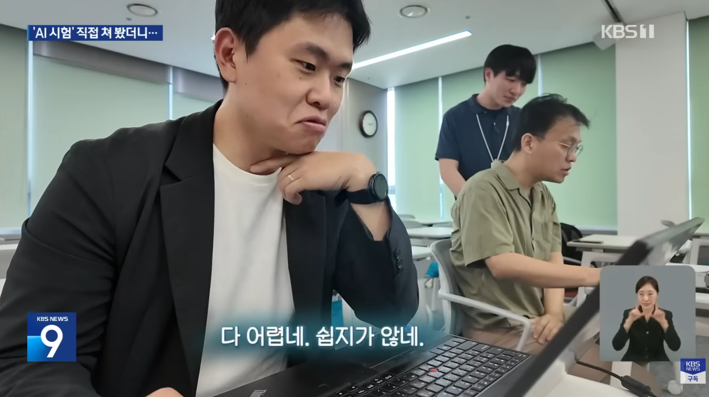
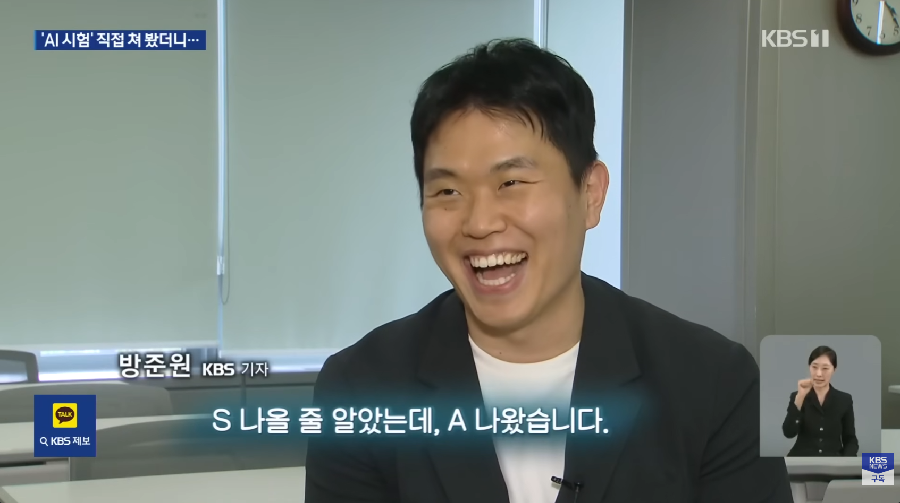
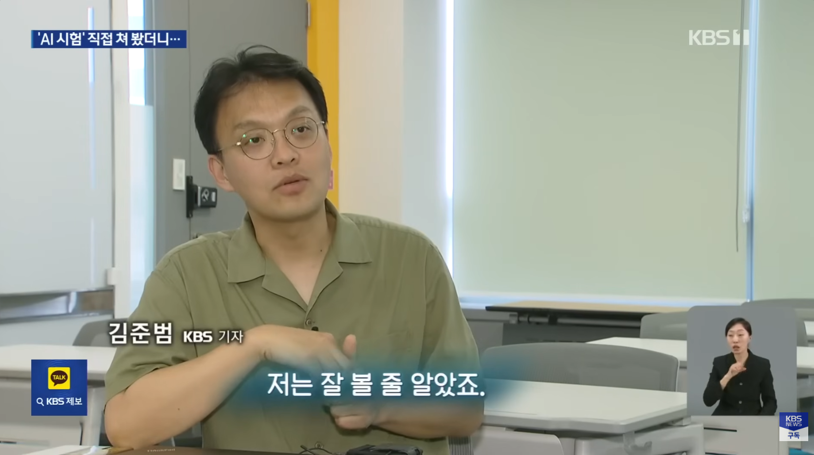
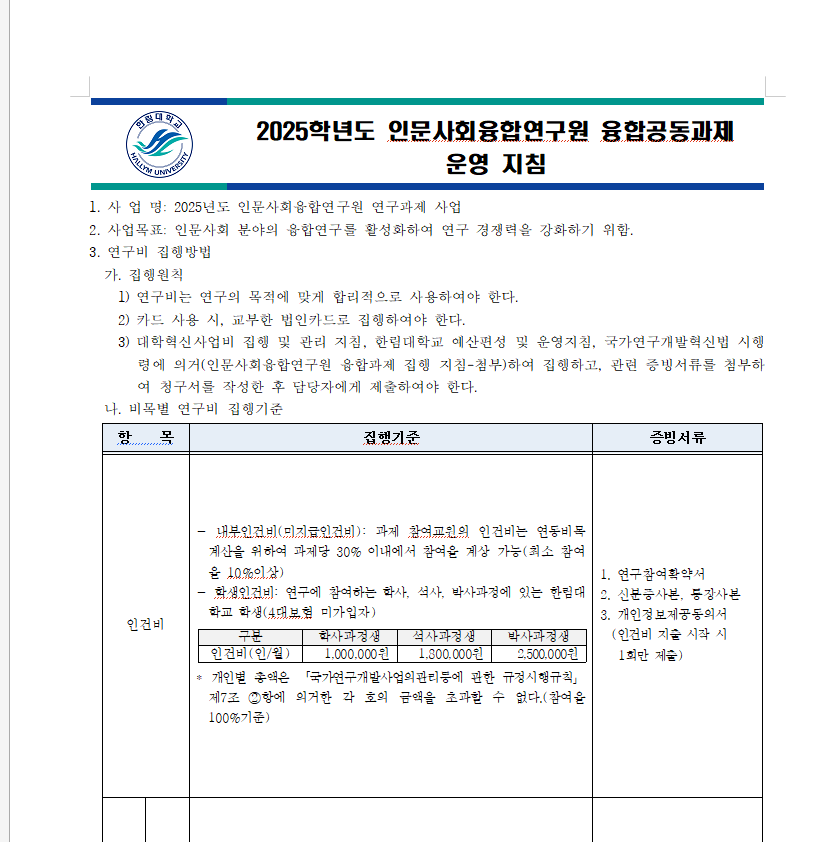

Part 0 · 도입
9년차는 A, 20년차는 B —
다년차 KBS 기자들도 고전했습니다
방준원 기자
KBS · 2018년 입사(45기) · 9년차
A


김준범 기자
KBS · 2007년 입사(33기) · 20년차
B


≠
최고 등급은 S · 출처: KBS 뉴스9(2026.06.01), 나무위키 KBS NEWS 구성원
Part 1 · 학계와 연구
못 쓰는 이유의 66%는 실력이 아니라
‘교육·지침 부족’이었습니다
필요한 건 ‘AI 교육’ 44%
‘어디서 시작할지 모름’ 22%
그리고 대부분은
“원고·보조금·동료평가에서 곧 보편화될 것”이라 답했다.
“원고·보조금·동료평가에서 곧 보편화될 것”이라 답했다.

Part 1 · 학계와 연구
그러나 Methods·Results·Discussion은
‘절대 쓰지 말라’가 과반입니다

초록·서론엔 관대하지만,
생산성 보조, 판단은 사람.
생산성 보조, 판단은 사람.
Part 1 · 동료평가 (Peer Review)
단 7개월 만의 반전
2025년 5월 · Nature
“Peer review에 AI, 절대 반대” 52%

2025년 12월 · Frontiers
55%
“이미 동료평가에 AI를 쓰고 있다”
(전 세계 1,600여 명)
7개월
Part 3 · AI 활용의 진화
AI는 5단계로 진화했습니다 — 프롬프트에서 하네스까지


출처: 더베러 뉴스레터 220호
Part 3 · 기록의 ‘형태’
같은 파일 — 사람 눈엔 깔끔, AI 눈엔 깨짐
사람의 눈 (한글 .hwp)

AI의 눈 (메모장으로 열기)

=
Part 4 · 3중 아키텍처
핵심은 수집·이해·실행을 ‘분리’하는 것
수집
CMDS LLM Wiki
AI가 고품질 자료를 자동 수집 — 찾는 노력을 줄인다.
이해
CMDS Vault
내가 읽고·이해하고·직접 쓴 것만 (AI 절대 금지).
실행
Achmage OS
반복 제작을 단축·표준화하는 시스템.

Part 4 · 세 공간이 하는 일
“모으는 곳 · 이해하는 곳 · 만들어 내는 곳”


LLM Wiki는 모으는 곳, Vault는 이해하는 곳, Achmage OS는 만들어 내는 곳.
Part 4 · 학생 개인 뉴스룸으로 보면
자료수집 데스크 · 편집·독서 노트 · 제작 데스크

LLM Wiki
편집장에게 자료를 수집·제공
Vault
읽기·검수·소화 — 시간 최다 투입
Achmage OS
제작 노가다↓, 내용 집중↑